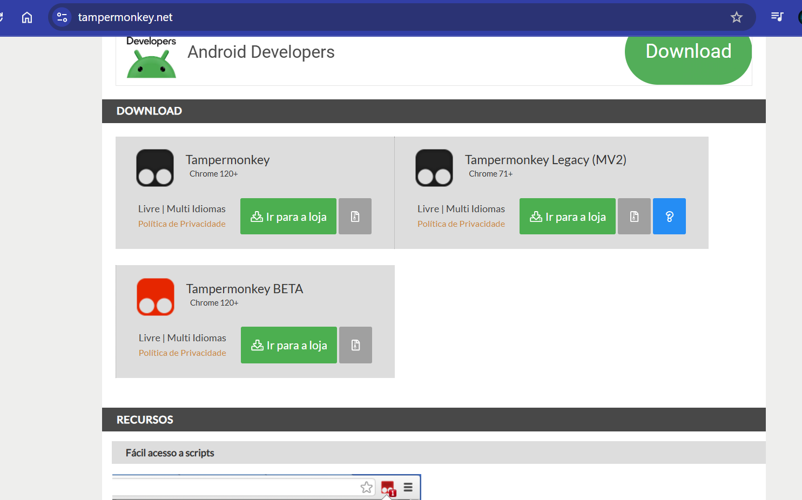
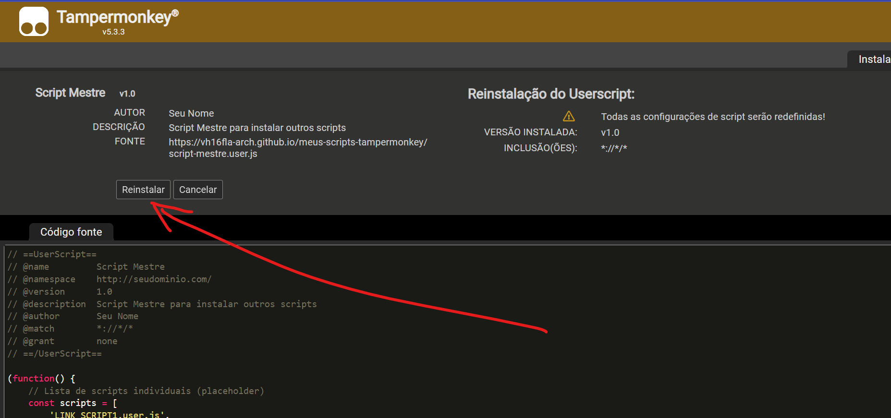

Instale a extensão de navegador Tampermonkey:
Escolha a sua versão, e clique em IR PARA A LOJA, como na imagem abaixo:
Clique aqui para instalar

Clique no ícone da extensão.:
Verifique a mensagem que diz /"habilite o modo de desenvolvedor", clique e siga o passo a passo para sua versão. A mensagem sumirá, indicando sucesso da operação.
Instale o Script Mestre:
Clique no botão abaixo para instalar o script mestre:

Script Mestre:
O script mestre irá carregar automaticamente os scripts individuais.
Não é necessário fazer nada, apenas aguarde alguns segundos até que todos os scripts sejam carregados.